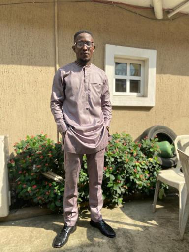

This is a simple page consisting of a few media elements in HTML, arranged with 'flex'.
Page Summary
This is a simple page consisting of a few media elements in HTML, arranged with 'flex'.
Page Summary


The Music Player is In Here!